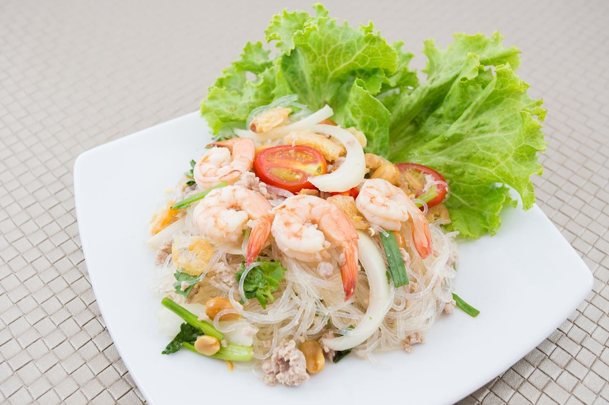
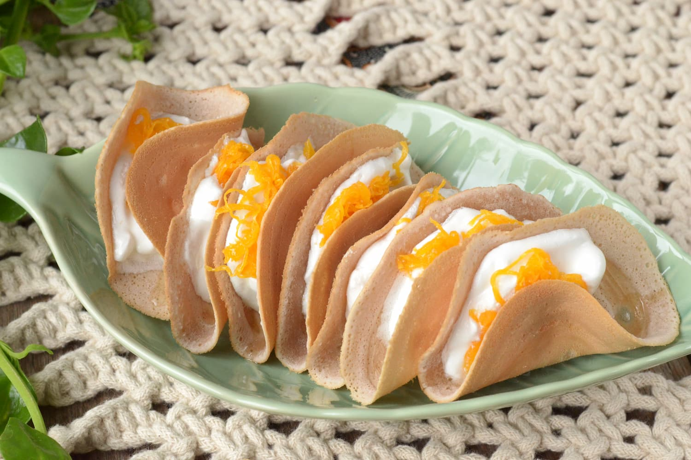
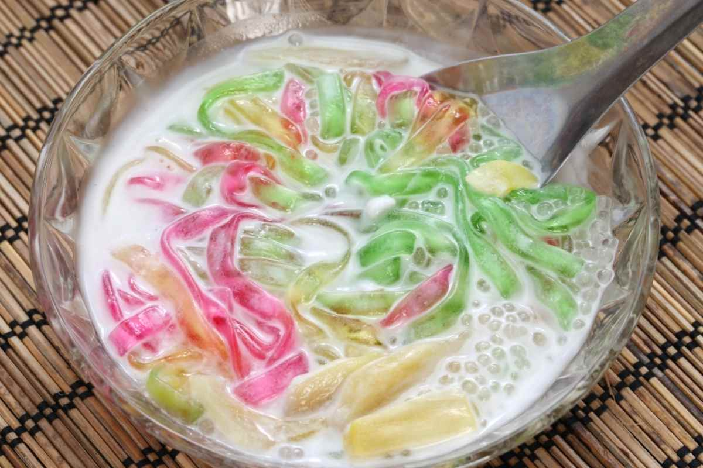
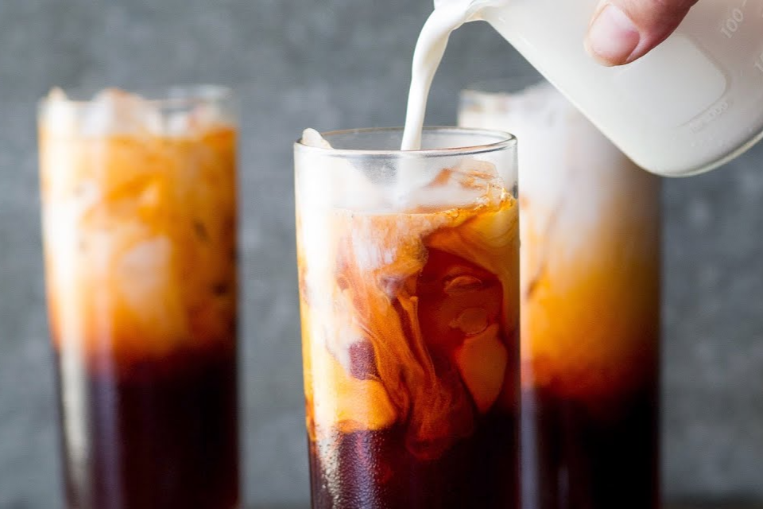

Про кухню Таїланду
Тайська кухня відома своїми поєднаннями кислих, солодких, солоних та гострих смаків. Вона часто використовує свіжі трави та спеції, як-от лимонна трава, галангал та лайм. Типові страви включають том-ям (гострий кислий суп), пад-тай (смажена локшина), каррі та страви на основі кокосового молока. Тайська кухня також славиться своєю вуличною їжею, такою як смажений рис з ананасом або манго зі солодким липким рисом.
Виберіть країну

Пад тайПопулярна тайська страва з рисової локшини, обсмаженої з яйцями, креветками або куркою, арахісом, паростками та спеціями.
Переглянути рецепт

Пад сі іуОбсмажена широка рисова локшина з соєвим соусом, овочами та м'ясом (часто зі свининою або куркою), популярна вулична страва.
Переглянути рецепт

Као сойПряний північний тайський суп з локшиною на кокосовому молоці, з додаванням курки або яловичини та хрусткою локшиною зверху.
Переглянути рецепт

Гуай т'ю руа"Локшина з човна", суп із тонкої локшини з яловичиною або свининою, спеціями та кров'ю для глибокого смаку.
Переглянути рецепт

Панеанг карріМ'який червоний каррі з густим кокосовим молоком, подається з м'ясом (найчастіше куркою або яловичиною) і ароматними спеціями.
Переглянути рецепт

Масаман карріТайсько-мусульманська страва, каррі з кокосовим молоком, арахісом, картоплею та м'ясом, відоме своїм солодко-пряним смаком.
Переглянути рецепт

Зелена карріГострий зелений каррі на кокосовому молоці з зеленими чилі, куркою, баклажанами та тайськими травами.
Переглянути рецепт

Тайська червона карріАроматний карі з кокосовим молоком, червоним чилі та травами, зазвичай з куркою або морепродуктами.
Переглянути рецепт

Том ямГостро-кислий суп з креветками, приправлений лимонною травою, лаймом, чилі та грибами.
Переглянути рецепт

Том кха гайСуп на кокосовому молоці з куркою, лимонною травою та галангалом, відомий своїм м'яким пряно-кислим смаком.
Переглянути рецепт

Куаї-тяо руаСтрава з рисової локшини в насиченому бульйоні з яловичиною або свининою, популярна серед тайських човнярів.
Переглянути рецепт

Єн та фоСуп з рожевим бульйоном на основі ферментованого соєвого соусу, подається з морепродуктами, локшиною та овочами.
Переглянути рецепт

ЛарбГострий салат з м'яса (найчастіше зі свинини або курки), змішаний з лаймом, м'ятою та спеціями, подається з рисом.
Переглянути рецепт

Салат із папаїГострий салат з тертої зеленої папаї, арахісом, помідорами, зеленими бобами і гострим соусом на основі лайму.
Переглянути рецепт

Пла кунгПряний салат з креветок, заправлений соком лайму, рибним соусом, чилі та свіжими травами.
Переглянути рецепт

Ям вун сенСалат з прозорої локшини, приправлений лаймом, чилі та свіжими травами.
Переглянути рецепт

Као ньєв мамуанґДесерт з клейкого рису, поданого з солодким кокосовим молоком і шматочками свіжого манго.
Переглянути рецепт

Тайські кокосові крепиТайські млинці з кокосового молока, зазвичай фаршировані солодкою кокосовою начинкою.
Переглянути рецепт

Руам мітТайський десерт з кокосовим молоком і різноманітними желейними інгредієнтами, іноді з льодом.
Переглянути рецепт

Тайський чай із льодомОхолоджений тайський чай з підсолодженим згущеним молоком і льодом, що має насичений аромат і солодкий смак.
Переглянути рецепт